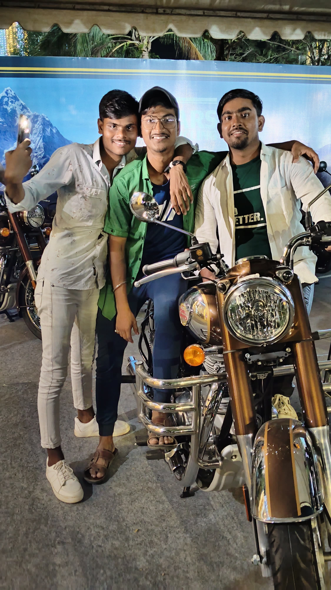
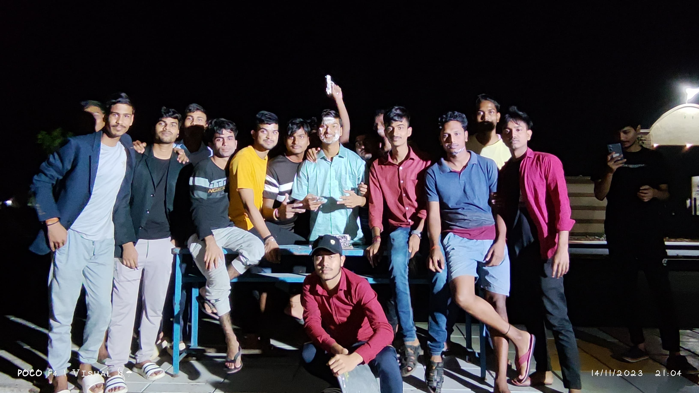
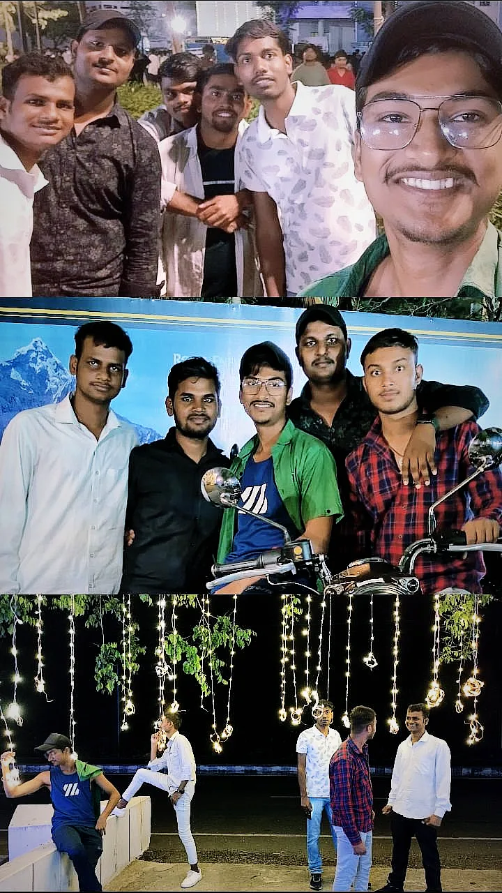
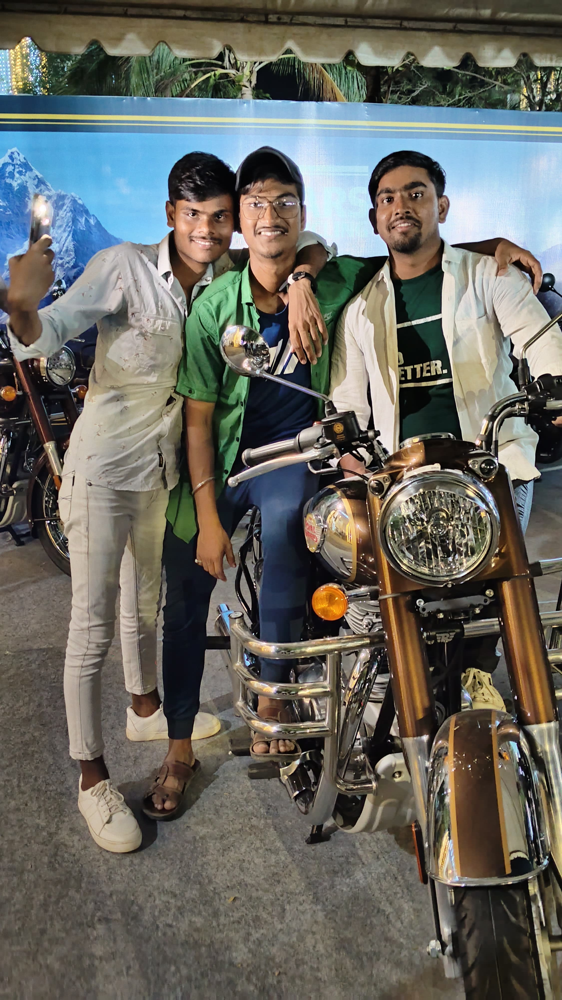
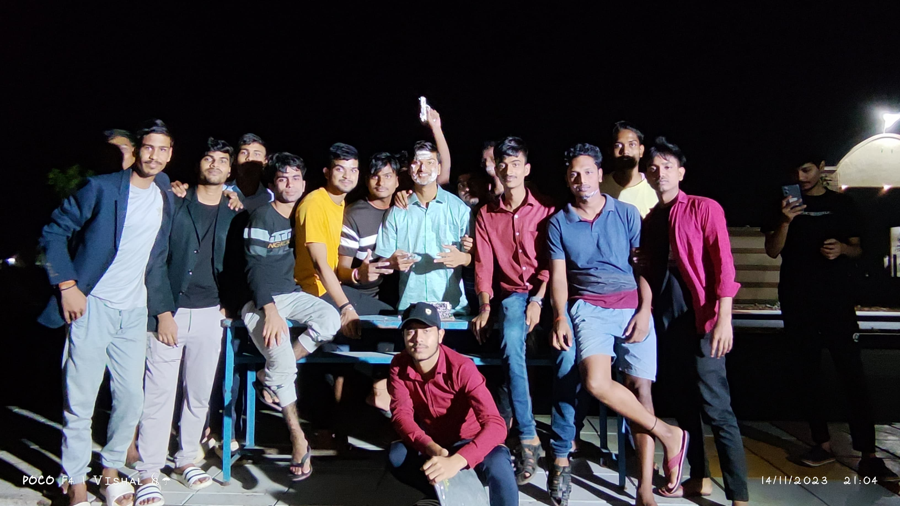
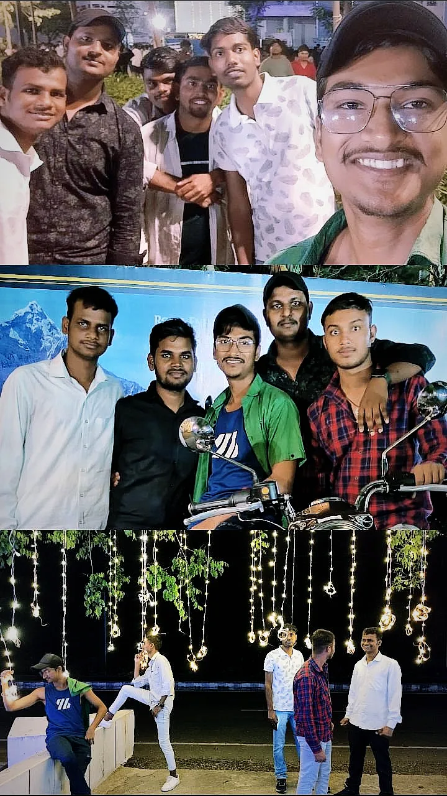
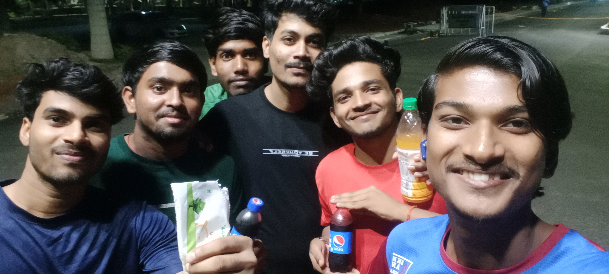
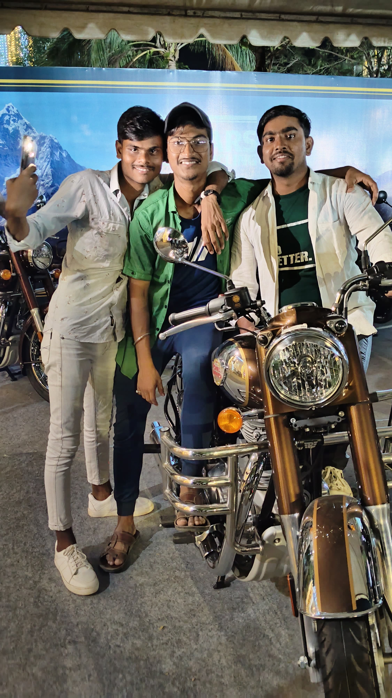
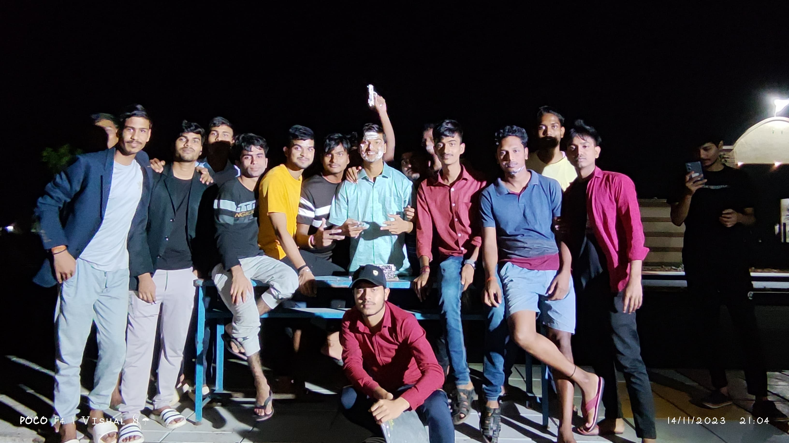
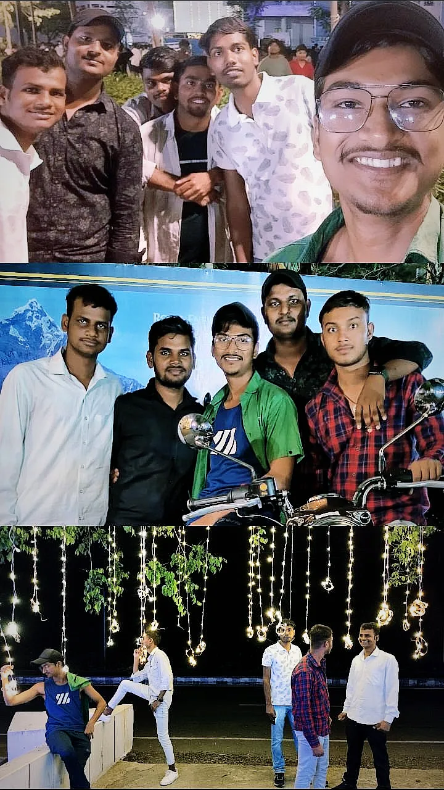

College wasn't just about lectures, deadlines, or exams—it was about the people who made the chaos feel like home.
My college friends weren’t just classmates; they were the family I chose. We shared late-night talks, last-minute cramming sessions, and countless memories stitched together with laughter and mutual survival.
We met as strangers, unsure and shy, In lecture halls where dreams flew high. From awkward hellos to inside jokes, We built a bond that never broke. Midnight maggi, chai on the stairs, Group studies that turned into random dares. Fest season chaos, last-minute plans, Endless selfies, and Instagram fans. We cribbed about classes, cursed the mess, But somehow loved all the stress. Backbench whispers, attendance lies, Canteen gossip and goodbye cries. Now we’re older, with paths apart, But carry each other in the heart. College gave us knowledge and ends, But best of all—it gave me friends.
College life was never just about academics—it was about the adventures we packed in between. From morning lectures we barely made to spontaneous evening hangouts, we turned ordinary days into unforgettable stories.
We went on random trips, had those classic late-night hostel talks, and uncountable class bunks. The little things—playing cards between classes, endless meme-sharing, bunking for movies—made it all feel like one long, beautiful reel of friendship and fun.


